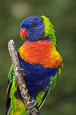
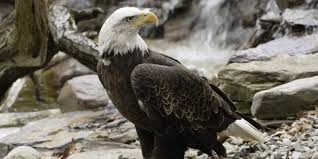
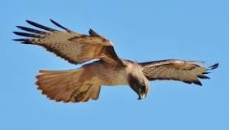

Measuring 63.5 cm (25 in.) in length, the toco toucan is the largest of all toucans. Its black body and white throat are overshadowed by its most recognizable trait: a large colorful beak. The bright orange beak is about 19 cm (8 in.) long – one third of the bird's total length.
|

This medium sized member of the parrot family grows to about 32 cm long.
As their name suggests, rainbow lorikeets are one of the most colourful and beautiful birds in the world.
They spend most of their time in trees, eating pollen, nectar, fruit, seeds and insects. |

The bald eagle, our national bird,is the only eagle unique to North America. The bald eagle's scientific name signifies a sea eagle with a white head. At one time, the word "bald" meant "white," not hairless. |

By any name, they are keen-eyed and efficient hunters. Red-tails prefer open areas, such as fields or deserts, with high perching places nearby from which they can watch for prey. But these birds are adaptable and also dwell in mountains and tropical rain forests. Hawks have even embraced human habitats. |